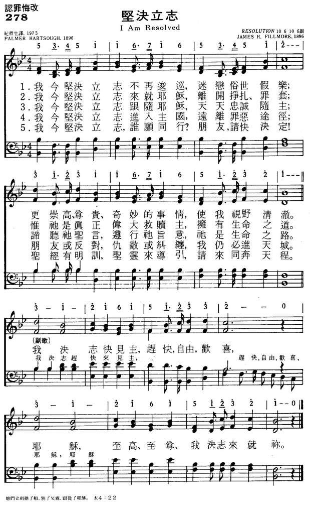
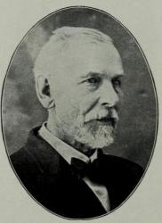

|
|
|
|
1 I am resolved no longer to linger, Refrain: 2 I am resolved to go to the Savior, 3 I am resolved, and who will go with me?
|
278坚决立志
1．我今坚决立志不再逡巡
迷恋俗世假乐 更崇高 尊贵 奇妙的事情 使我视野清澈 *我决志快见主 赶快自由欢喜 耶稣 至高 至尊 我决志来就祢 2．我今坚决立志来就耶稣 离开挣扎罪套 惟衪是真正伟大救赎主 拥有生命之道路 3．我今坚决立志跟随耶稣 天天忠诚随主 谛听祂圣言遵行祂旨意 祂是生命之路 4．我今坚决立志进入主国 远离罪恶途径 朋友或反对仇敌或纠缠 我仍必进天城 5．我今坚决立志 谁愿同行 朋友请快决定 圣经有明训圣灵来导引 请来同奔天程 |
|
https://www.mred365.cn/szxg/7281.html
 https://hymnary.org/hymn/BH2008/page/530
|
|
|
|
|

-

坚决立志 Hymn 405 I Am Resolved https://www.youtube.com/watch?v=a3meP3yKsEU - I Am Resolved - A Cappella Hymn https://www.youtube.com/watch?v=r1934YBxZsg
LX1865 I
Am Resolved
278坚决立志
| Text: | I Am Resolved |
| Author: | Palmer Hartsough |
| Tune: | RESOLUTION |
| Composer: | James H. Fillmore |
| Short Name: | Palmer Hartsough |
| Full Name: | Hartsough, Palmer, 1844-1932 |
| Birth Year: | 1844 |
| Death Year: | 1932 |
Rv Palmer Hartsough

USA 1844-1932. Born in Redford, MI, he attended Kalamazoo College and Michigan State Normal school (later MSU). He became an author, editor, lyricist, and librettist. After working as a traveling singing teacher in MI, IL, IA, OH, KY and TN, he opened a music studio in Rock Island, IL, around 1877, also directing music at a Baptist church there. In 1893, due to his poetic abilities, he moved to Cincinnati, OH, and joined the Fillmore Music Company, providing texts (over 1000) for their music. He also served as music director at the Bethel Mission and the 9th Street Baptist Church. He became a traveling song evangelist in 1903, and was ordained a Baptist minister in 1906, serving in Ontario, Canada, and MI from 1914 to 1927. He then returned to Plymouth, MI, where he lived the rest of his life. He never married, but was close to his two sisters, and wrote them a weekly letter for many years. With Fillmore Company he helped publish 20 songbooks. He died in Plymouth, MI.
John Perry
| Short Name: | J. H. Fillmore |
| Full Name: | Fillmore, J. H., (James Henry), 1849-1936 |
| Birth Year: | 1849 |
| Death Year: | 1936 |
James Henry Fillmore

USA 1849-1936. Born at Cincinnati, OH, he helped support his family by running his father's singing school. He married Annie Eliza McKrell in 1880, and they had five children. After his father's death he and his brothers, Charles and Frederick, founded the Fillmore Brothers Music House in Cincinnati, specializing in publishing religious music. He was also an author, composer, and editor of music, composing hymn tunes, anthems, and cantatas, as well as publishing 20+ Christian songbooks and hymnals. He issued a monthly periodical “The music messsenger”, typically putting in his own hymns before publishing them in hymnbooks. Jessie Brown Pounds, also a hymnist, contributed song lyrics to the Fillmore Music House for 30 years, and many tunes were composed for her lyrics. He was instrumental in the prohibition and temperance efforts of the day. His wife died in 1913, and he took a world tour trip with single daughter, Fred (a church singer), in the early 1920s. He died in Cincinnati. His son, Henry, became a bandmaster/composer.
John Perry
"I AM RESOLVED" hymnstudiesblog
"Lord, to whom shall we go? Thou hast the words of eternal life" (Jn. 6.68)
INTRO.:
A song which demonstrates the attitude of resolution to go to Jesus because He has the words of eternal life is, "I Am Resolved" (#325 in Hymns for Worship Revised and #642 in Sacred Selections for the Church). The text was written by Palmer Hartsough, who was born on May 7, 1844, at Redford, MI, the son of Wells and Thankful Palmer Hartsough. His father was active in the Michigan Baptist Convention. In 1856, the family moved to Plymouth, MI, and Palmer attended both Kalamazoo College and Michigan State Normal. While in college, he became interested in music and began teaching singing schools in rural areas. During the following ten years, he travelled throughout Michigan, Illinois, Iowa, Ohio, Kentucky, and Tennessee as an itinerant singing school teacher.
About 1877, Hartsough settled in Rock Island, IL, where he opened a music studio and served as music director at the local Baptist Church. His poetic ability attracted the attention of the Fillmore Brothers Publishing Company of Cincinnati, OH. So in 1893, Hartsough moved to Cincinnati to work with the Fillmore brothers, providing texts for their music. The tune (Endeavor) for this particular hymn was composed by James Henry Fillmore (1849-1936). The song was produced in 1896 as a delegation song for Ohio representatives at the World Endeavor Convention in San Francisco, CA, to honor its founder, Frances E. Clark. Its first hymnbook appearance was in The Praise Hymnal, published by Fillmore.
During his ten years at Cincinnati, Hartsough served as music director for the Ninth St. Baptist Church. He was a prolific author of texts for hymns, producing more than a thousand of them, such as "Jesus Is Calling, Calling, Calling" and "O Savior Mine." Leaving the Fillmore firm in 1903, he engaged in full-time evangelistic song leading, but later, in 1906 became a Baptist minister. In 1914 he began work with the Baptist Church in Ontario, MI, at the age of seventy, and served there for thirteen years. Upon his retirement in 1927, he returned to Plymouth, MI, where he remained until his death at the age of 88 on Oct., 1932. He never married, but was very close to his two sisters and wrote them a weekly letter for many years.
Among hymnbooks published by members of the Lord’s church during the twentieth century for use in churches of Christ, the song appeared in the 1938 Spiritual Melodies edited by Tillit S. Teddlie; 1948 Christian Hymns No. 2 and the 1966 Christian Hymns No. 3 both edited by L. O. Sanderson; the 1952 Hymns of Praise and Devotion edited by Will W. Slater; the 1959 Majestic Hymnal No. 2 and the 1978 Hymns of Praise both edited by Reuel Lemmons; the 1963 Abiding Hymns edited by Robert C. Welch; the 1963 Christian Hymnal edited by J. Nelson Slater; and the 1975 Supplement to the 1937 Great Songs of the Church No. 2 originally edited by E. L. Jorgenson. Today it may be found in the 1971 Songs of the Church, the 1990 Songs of the Church 21st C. Ed., and the 1994 Songs of Faith and Praise all edited by Alton H. Howard; the 1978/1983 Church Gospel Songs and Hymns edited by V. E. Howard; the 1986 Great Songs Revised edited by Forrest M. McCann; and the 1992 Praise for the Lord edited by John P. Wiegand; in addition to Hymns for Worship, Sacred Selections, and the 2007 Sacred Songs of the Church edited by William D. Jeffcoat.
This song expresses the resolve that is necessary to obey the gospel and be saved.
I. Stanza one says that we must be resolved no longer to linger
"I am resolved no longer to linger, Charmed by the world’s delight;
Things that are higher, things that are nobler, These have allured my sight."
A. We should linger no longer because now is the accepted time: 2 Cor. 6.2,
Heb. 3.15
B. However, the world tempts us to linger longer by its delights: 1 Jn. 2.15-16
C. Yet, if we set our affections on things that are higher and nobler, they
will encourage us not to linger: 2 Cor. 4.16-18, Col. 3.1-2
II. Stanza two says that we must be resolved to go to the Savior
"I am resolved to go to the Savior, Leaving my sin and strife;
He is the true One, He is the just one, He hath the words of life."
A. Jesus Christ came to be the Savior of the world: Mt. 1.21, Lk. 19.10, 1 Tim.
1.15
B. He wants us to come to Him for salvation: Mt. 11.28-30
C. Our coming to Him requires both faith and obedience: Mk. 16.15-16
III. Stanza three says that we must be resolved to follow the Savior
"I am resolved to follow the Savior, Faithful and true each day,
Heed what He sayeth, do what He willeth; He is the living way."
A. Jesus came to be not only our Savior but also our Lord: Mt. 7.21, Lk. 2.10
B. Therefore, it is not enough just to "accept Him as Savior;" we must continue
to follow Him as the Lord: Mt. 16.24
C. To that intent, He left us an example that we should follow in His steps: 1
Pet. 2.21
IV. Stanza four says that we must be resolved to enter the kingdom
"I am resolved to enter the kingdom, Leaving the paths of sin;
Friends may oppose me, foes may beset me, Still will I enter in."
A. The kingdom of the Lord is His church: Mt. 16.18-19, Col. 1.13, Rev. 1.9
B. When we obey the gospel and are saved, we enter the church or kingdom as we
are added to it by the Lord Himself: Acts 2.38-47
C. One purpose of the kingdom or church on earth is to hold forth the truth so
that the world might hear it and be saved: 1 Tim. 3.15, Rev. 22.17
V. Stanza 5 says that we must be resolved to ask others to come with us
"I am resolved, and who will go with me? Come, friends, without delay;
Taught by the Bible, led by the Spirit, We’ll walk the heavenly way."
A. As Christians, we need to go to our families and friends to see who among
them will go with us and tell them what great things the Lord has done for us:
Mk. 5.19
B. As part of the bride of christ, we must speak to those who are athirst and
say, "Come": Rev. 22.17
C. Because those who walk the heavenly way must be taught by the Bible and
through it be led by the Spirit, it is the responsibility of those who are saved
to teach others also: 2 Tim. 2.2
CONCL.:
The chorus continues to emphasize the need of this resolution to come to Christ.
"I will hasten to Him, Hasten so glad and free;
Jesus, greatest, highest, I will come to Thee."
We need to have the attitude of the prodigal son, who resolved, "I will arise
and go to my father, and will say to him, ‘Father, I have sinned against heaven
and before you, and am no longer worthy to be called your son. Make me like one
of your hired servants"–and did exactly that (Lk. 15.10-20). Each New Year’s
Day, many people follow the custom of making resolutions for a better life, and
there is nothing wrong with this, although we should strive to do better each
day that we live. However, those who are not Christians should not wait until
Jan. 1, or any time in the future, but make their souls right with God by
obeying the gospel now, saying, "I Am Resolved."
Words: Palmer Hartsough (b. May 7, 1844; d. Oct. 24,
1932)
Music: James Henry Filmore, Sr. (b. June 1, 1849; d. Feb.
8, 1936)
Links:
Wordwise Hymns
The Cyber
Hymnal
To “resolve” is to come to a firm and definite decision, to strongly determine to do something. It’s the opposite of doubtful hesitation, and of wavering indecision. The distinction brings to mind the prophet’s challenge on Mount Carmel:
“Elijah came to all the people, and said, ‘How long will you falter [waver] between two opinions? If the LORD is God, follow Him; but if Baal, follow him.’ But the people answered him not a word” (I Kgs. 18:21).
As James puts it, the doubled-minded man is “unstable in all his ways” (Jas. 1:8). If you can’t decide which path to follow, or you’re constantly trying to hop back and forth between two different paths, it’ll affect all you do. You’ll be constantly second-guessing yourself, and others will find you unreliable. It’s no way to live! Certainly not when it comes to things that determine our eternal destiny.
Of course, many make resolutions and do not keep them (witness the proverbial “New Year’s Resolutions”). But when, as sinners we trust in Christ for salvation, the Holy Spirit comes to dwell within, giving us the power to maintain a Christian walk. We may falter and stumble at times, but it is always possible to seek God’s forgiveness (I Jn. 1:9), and take up our walk again.
In terms of our commitment to God and His Word, a clear-cut choice is called for. As John puts it, “If anyone loves the world, the love of the Father is not in him” (I Jn. 2:15). There’s no in between. The same thing is seen in Jesus description of the narrow way and the broad way (Matt. 7:13-14). In the stirring words of Joshua, “Choose for yourselves this day whom you will serve….But as for me and my house, we will serve the LORD” (Josh. 24:15). Choose! Decide! (And not to decide…is to decide!)
CH-1) I am resolved no longer to linger,
Charmed by the world’s delight,
Things that are higher, things that are nobler,
These have allured my sight.
I will hasten to Him, hasten so glad and free;
Jesus, greatest, highest, I will come to Thee.
I will hasten, hasten to Him, hasten so glad and free;
Jesus, Jesus, greatest, highest, I will come to Thee.
That decision relates first of all to the sinner coming to Christ for salvation. “He hath the words of life,” says Hartsough (CH-2), alluding to the conversation of the Lord Jesus with Peter (Jn. 6:66-69). Then, for the Christian, there’s the ongoing commitment to “follow the Saviour, faithful and true each day” (CH-3). And what does that involve? “Heed what He sayeth, do what He willeth,” says the author. And there’s a recognition that this journey will involve opposition: “Friends may oppose me, foes may beset me” (CH-4).
Finally, Palmer Hartsough issues a summons to others. And the resources for the Christian walk are aptly described in one line: “Taught by the Bible, led by the Spirit.” That sums it up nicely. The Word of God is a light to our path (Ps. 119:105), and the Spirit of guides and directs our steps, empowering us to resist temptation and to serve the Lord (Rom. 8:14; cf. Gal. 5:16, 25).
5) I am resolved, and who will go with me?
Come, friends, without delay,
Taught by the Bible, led by the Spirit,
We’ll walk the heav’nly way.
Questions:
1) What are your primary resolutions, the things you are determined to
do, by the grace of God?
2) What are you doing to encourage and enlist others to go with you in following Christ?
Links:
Wordwise Hymns
The Cyber
Hymnal